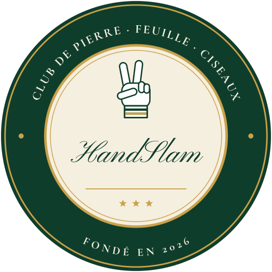

Philosophie de la discipline
Humain trop humain
Les vertus du chi fou mi dans le monde d'aujourd'hui
À l'heure où l'intelligence artificielle envahit notre quotidien, tandis que certains rêvent d'une post-humanité ou d'une humanité augmentée, il est un jeu qui reste celui d'une intelligence tout humaine et d'une humanité désespérément réduite : le pierre-feuille-ciseaux.
Contribution · 4 novembre 2026 · 2 minutes de lecture
Bien sûr, après quelques rencontres de HandSlam, la main avertie comprend vite que le joueur idéal est celui qui mime le comportement de la machine, celui qui joue de manière parfaitement aléatoire et pour cette raison totalement illisible. Mais ce modèle idéal (sauf bien sûr à jouer avec l'assistance d'un générateur de coups aléatoires, mais cette pratique est à juste titre formellement proscrite par les instances) demeure précisément un idéal inaccessible. À la longue, toute séquence, au pierre-feuille-ciseaux, trahit fatalement son origine humaine.
C'est dans cet écart avec le hasard parfait de la machine que réside même la condition de possibilité du chi fou mi : le joueur est assuré qu'il affronte une stratégie humaine, trop humaine, et le défi est alors de la contrer.
Pierre-ciseaux-feuille, c'est ainsi l'homme qui reconnaît dans la main tendue de son adversaire le visage de son frère d'humanité. Survivance d'un monde d'hier, d'un monde sans la machine, c'est aussi, nous en sommes convaincus, l'espoir du monde de demain.
